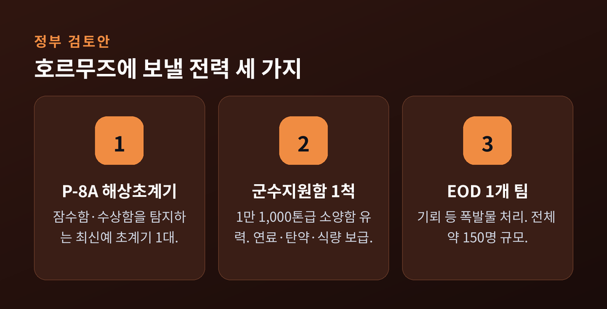
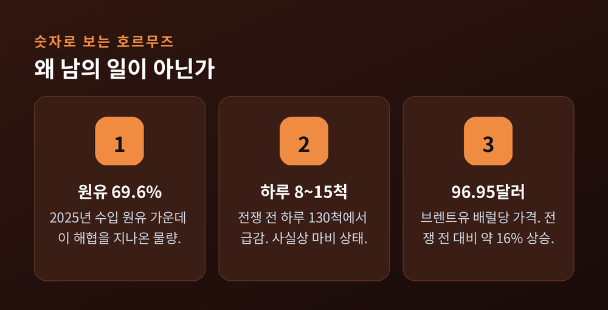
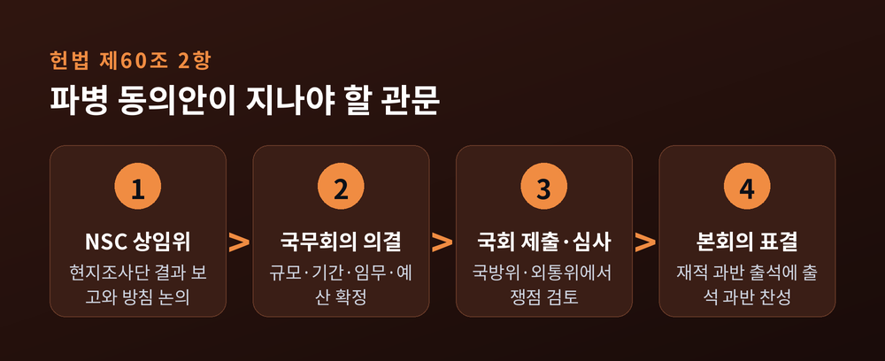
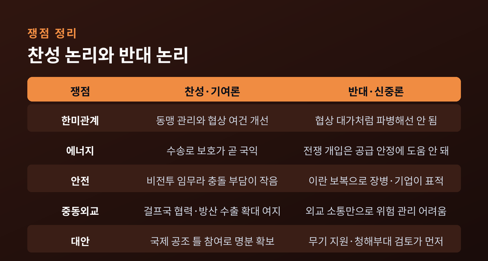
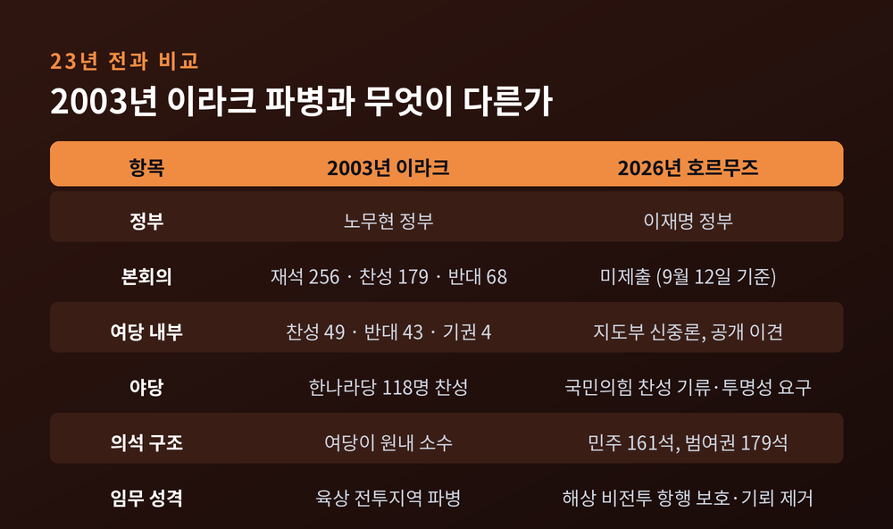

이번 글에서는 호르무즈 해협 파병 동의안을 둘러싼 상황을 정리해 보겠습니다. 정부는 군 자산과 병력 파견 쪽으로 가닥을 잡았고, 국회 제출 여부가 눈앞의 관문으로 올라왔습니다. 무엇이 결정됐고 무엇이 아직 열려 있는지, 찬반 양측의 논리는 무엇인지 차례로 짚어보겠습니다.
2026년 9월 12일 현재, 파병 동의안은 아직 국회에 제출되지 않았습니다.
언론 보도로 확인된 검토안의 윤곽은 이렇습니다. P-8A 포세이돈 해상초계기 1대, 1만 1,000톤급 대형 군수지원함 1척, 폭발물처리(EOD) 1개 팀입니다. 군수지원함으로는 소양함이 유력하게 거론됩니다. 전체 병력은 약 150명 규모입니다.
세 가지 자산 모두 방어적 성격이라는 점이 눈에 띕니다. 잠수함과 수상함을 탐지하고, 연료와 탄약을 보급하고, 기뢰를 제거하는 임무입니다. 전투 부대는 빠져 있습니다. 미국의 요청은 받되 이란과의 직접 충돌은 피하겠다는 설계로 읽힙니다.
규모는 더 줄어들 수도 있습니다. 이란의 압박을 고려해 군수지원함을 제외하는 방안도 함께 검토된다는 보도가 나왔습니다. 승조원 약 100명이 빠지면 파견 인원은 50명 안팎까지 내려갑니다.
시간표는 촉박합니다. 미국은 11월을 시점으로 특정해 파병을 요청한 것으로 알려졌습니다. 정부는 9월 중 국무회의 의결을 거쳐 동의안을 국회에 제출하는 방안을 검토했다고 전해집니다. 호르무즈 현지 상황을 점검하러 아랍에미리트에 갔던 국방부 조사단은 9월 10일 귀국했고, 조만간 국가안전보장회의에 결과를 보고할 전망입니다.
다만 정부 공식 입장은 여전히 "미확정"입니다. 청와대는 관련 보도에 "사실과 다르다"고 선을 그었습니다. 한성숙 국무총리도 9월 10일 대정부질문에서 "구체적으로 실질적 기여 방안에 관해서 결정된 바가 없다"고 답했습니다.

호르무즈는 우리 경제의 숨구멍에 가깝습니다.
2025년 기준 한국이 수입한 원유는 1억 3,700만 톤입니다. 이 가운데 호르무즈 해협을 지나온 물량이 69.6%에 이릅니다. 사우디아라비아 4,713만 톤, 이라크 1,550만 톤, 아랍에미리트 1,535만 톤, 쿠웨이트 1,193만 톤, 카타르 547만 톤입니다. 액화천연가스도 약 20%가 중동에서 들어옵니다.
세계 전체로 보면 해상 원유 운송량의 약 25%, 액화천연가스 교역량의 약 20%가 이 좁은 길목을 통과합니다.
그런데 그 길목이 지금 사실상 닫혀 있습니다. 미국과 이스라엘의 대이란 군사작전이 2026년 2월 말 시작된 뒤, 이란은 미사일과 드론, 기뢰로 상선을 위협해 왔습니다. 전쟁 전에는 하루 130척가량이 지나던 해협에, 지금은 8척에서 15척만 통과하는 날도 있습니다. 브렌트유는 배럴당 96.95달러까지 올랐습니다.
9월 10일에는 이란 혁명수비대가 미 해군 함정과 유조선을 겨냥했다고 밝혔습니다. 이란 최고국가안보회의는 해협 바깥에 '배제구역'을 설정하겠다고도 했습니다. 상황은 진정되기보다 조여드는 쪽입니다.

해외 파병은 대통령이 혼자 결정할 수 없습니다.
헌법 제60조 2항은 국군의 외국 파견에 대한 동의권을 국회에 주고 있습니다. 동의안은 재적 의원 과반수가 출석하고, 출석 의원 과반수가 찬성해야 의결됩니다.
동의안에는 파견 지역과 파견 필요성, 부대의 규모·기간·임무, 지휘관계, 예산이 담깁니다. 절차는 국방부와 외교부 검토에서 출발해 국가안전보장회의 상임위 논의, 국무회의 의결, 국회 제출, 국방위·외교통일위 심사, 본회의 표결로 이어집니다.
이두희 국방부 차관도 대정부질문에서 이 점을 분명히 했습니다. 해외 파병을 하게 된다면 국민적 공감대와 법적 절차에 따라 국회에 보고하고 동의를 받는 과정이 반드시 필요하다는 답변이었습니다.
절차를 둘러싼 문제 제기도 있습니다. 참여연대 평화군축센터는 2020년 사례를 지적합니다. 당시 정부는 청해부대 파견연장 동의안에 "유사시 우리 국민 보호 활동 시에는 지시되는 해역 포함"이라는 문구를 넣어 사실상 파견지역 확대에 대한 국회 동의를 우회했다는 것입니다. 실제로 2020년 미국의 호르무즈 파병 요청 때는 국회 동의 없이 아덴만 청해부대의 작전 범위를 일시 확대하는 방식으로 대응했습니다.
예전엔 그렇게 우회했습니다. 지금은 정식 동의안 경로가 거론됩니다. 이 차이 자체가 이번 사안의 무게를 보여줍니다.

정치 사안인 만큼 양쪽을 나란히 놓겠습니다. 외교·안보 전문가 인터뷰와 국회 발언에서 정리한 내용입니다.
찬성·기여론 쪽 근거
첫째, 한미 관계 관리입니다. 민정훈 국립외교원 교수는 미국이 어려움을 겪는 상황에서 한국의 지원이 양국 관계 전반에 긍정적 영향을 줄 수 있다고 봤습니다. 다만 기여에 상응해 한미 원자력협정 개정이나 전시작전통제권 전환에 관한 구체적 약속을 받아내야 한다고 덧붙였습니다.
둘째, 에너지 수송로 보호라는 직접적 국익입니다. 원유의 70% 가까이가 지나는 길을 지키는 일은 명분이 선명합니다.
셋째, 걸프 국가와의 협력 확대입니다. 장지향 아산정책연구원 수석연구위원은 사우디·아랍에미리트·카타르가 한국의 에너지 공급국이자 원전·방산 협력 대상이라는 점을 짚었습니다. 안보 위기를 겪는 이들에게 실질적 도움을 준다면 경제 협력으로 이어질 여지가 있다는 진단입니다.
넷째, 북미 대화가 재개될 경우 한국이 배제되는 이른바 '코리아 패싱'을 줄일 수 있다는 기대입니다. 신범철 세종연구소 수석연구위원은 이 우려가 정부의 파병 검토에 변수로 작용했을 가능성을 제시했습니다.
반대·신중론 쪽 근거
첫째, 이란의 보복입니다. 신범철 위원은 한국이 표적이 될 수 있고, 중동에 진출한 우리 기업도 보복 대상이 될 가능성을 경계했습니다.
둘째, 장병과 국민의 안전입니다. 민정훈 교수는 작전 중 사상자가 발생하면 이란과의 관계 악화는 물론 정부 책임론으로 번질 수 있다고 봤습니다.
셋째, 위협의 성격이 다르다는 지적입니다. 장지향 위원은 이란의 위협을 과거 이라크 파병과 구별되는 요인으로 꼽으며, 외교 당국과의 소통만으로는 군사적 위험을 충분히 관리하기 어려울 수 있다고 말했습니다.
넷째, 실익 문제입니다. 이기헌 더불어민주당 의원은 전쟁에 직접 개입하는 것이 에너지의 안정적 공급에도, 국익에도 부합하지 않는다고 밝혔습니다. 김병주 의원은 미국이 요구한다고 해서 끌려들어 가서는 안 된다고 했습니다.
다섯째, 대안 검토가 부족했다는 비판입니다. 신범철 위원은 무기 지원이나 청해부대 활용 같은 선택지를 함께 우선 검토했어야 한다고 지적했습니다.
정부 대응의 적절성을 두고도 평가는 갈립니다. 장지향 위원은 유럽 국가들이 이미 걸프국 지원에 나선 점을 들어 한국의 대응이 늦었다고 봤습니다. 반면 민정훈 교수는 일찍 지원했더라도 미국의 추가 요구나 이란의 반발이 없었으리라는 보장은 없다며 단정을 피했습니다.

이번 국면은 23년 전과 자주 겹쳐 읽힙니다.
2003년 이라크 파병 동의안은 재석 256명 중 찬성 179명, 반대 68명, 기권 9명으로 가결됐습니다. 하지만 집권 민주당 내부는 찬성 49명, 반대 43명, 기권 4명으로 거의 반으로 갈렸습니다. 원내 1당이던 한나라당에서 118명이 찬성표를 던져 통과된 셈입니다.
당내 대립으로 처리가 두 차례 연기되자, 노무현 전 대통령은 그해 4월 2일 직접 국회를 찾아 동의를 호소했습니다. 대통령이 된 지금의 선택은 개인의 선택일 수 없다는 취지의 발언을 남겼습니다.
지금은 조건이 다릅니다. 더불어민주당은 161석, 국민의힘은 110석입니다. 조국혁신당과 진보당 등을 더한 범여권은 179석입니다. 산술적으로는 여권이 단독 처리할 수 있는 구조입니다.
그래서 관문이 국회 본회의가 아니라 여당 내부로 옮겨왔습니다. 2003년에는 야당 표가 열쇠였습니다. 2026년에는 여당 의원들의 표가 열쇠입니다.
한 가지 더. 이라크 파병은 육상 전투지역으로 가는 일이었고, 이번 검토안은 해상 비전투 임무입니다. 반면 이란의 보복 역량은 당시 이라크와 비교하기 어렵다는 지적이 함께 나옵니다. 성격은 가벼워졌지만 위험은 가볍지 않다는 뜻입니다.

이번 사안의 가장 특이한 대목은 전선의 방향입니다.
여당 지도부는 신중론을 유지하고 있습니다. 김원이 전략기획위원장은 의원 대화방에 개별 대응을 자제해 달라는 취지의 메시지를 보낸 것으로 알려졌습니다. 그럼에도 목소리는 이미 갈렸습니다.
이기헌 의원은 파병이 다른 협상의 대가처럼 이루어져서는 안 된다며 반대했습니다. 이광재 의원은 국제사회와 보조를 맞추는 것이 중요한 전략이라며 매우 신중해야 한다고 했습니다. 반면 박지원 의원은 비전투 병과라면 어느 정도 파병할 수밖에 없지 않으냐며 불가피함을 인정한다고 밝혔습니다.
범여권 소수정당은 반대 쪽입니다. 조국혁신당·진보당·기본소득당·사회민주당은 3월에 전쟁 및 파병 반대 결의안을 제출했습니다. 진보당은 파병이 장병과 중동 지역 교민·기업·선박은 물론 국내까지 보복과 테러의 위험에 노출시킨다고 주장합니다.
야당인 국민의힘은 파병 필요성 쪽에 무게를 싣습니다. 동시에 절차와 투명성을 강하게 요구합니다. 정점식 원내대표는 파병에 국회 동의가 필수적이라고 못 박으면서, 정부가 국회에 나와 호르무즈와 한미관계의 상황을 투명하게 공개해야 한다고 요구했습니다. 국방위 긴급 현안질의도 요청한 상태입니다. 다만 당론으로 찬성을 확정하지는 않았습니다.
"야당이 파병을 재촉하고 여당이 제동을 거는" 구도입니다. 통상의 진영 논리로는 잘 설명되지 않는 지형입니다.
정리하면 남은 길은 이렇습니다.
아랍에미리트 현지조사단 보고가 국가안전보장회의 상임위에 올라가는 것이 첫 단계입니다. 이어 국무회의 의결과 국회 제출이 뒤따릅니다. 국방위와 외교통일위 심사를 거쳐 본회의 표결로 마무리됩니다.
변수는 세 가지로 보입니다.
하나는 시간입니다. 미국이 요청한 시점은 11월이고, 정기국회는 국정감사와 예산 정국으로 이어집니다. 심사 일정이 밀릴 여지가 큽니다.
둘은 여당 내부 조율입니다. 지도부가 당론을 어느 쪽으로 정하느냐가 사실상 결과를 좌우합니다.
셋은 현지 정세입니다. 이란의 '배제구역' 선언처럼 상황이 더 악화되면 찬반 양측의 논거가 동시에 강해집니다. 위험이 커졌으니 가지 말자는 주장과, 그만큼 우리 수송로가 위태로우니 가야 한다는 주장이 함께 힘을 받습니다.
아직 확인되지 않은 것도 분명히 짚어두겠습니다. 동의안의 정확한 제출일, 본회의 표결 예정일, 파병 기간과 예산 규모는 이 글을 쓰는 시점까지 공개되지 않았습니다.
끝으로 한 마디만 더 드리겠습니다.
이 사안은 옳고 그름이 한쪽에만 있는 문제가 아닙니다. 에너지 수송로를 지켜야 한다는 말도, 명분 없는 전쟁에 끌려가서는 안 된다는 말도 각각 근거를 갖고 있습니다. 그래서 더더욱 절차가 중요합니다.
"파병 여부보다 먼저 물어야 할 것은, 무엇을 위해 어디까지 가느냐입니다."
국회 동의권은 그 질문을 공개적으로 던지라고 헌법이 마련해 둔 장치입니다. 동의안이 제출된다면, 그 문서에 적힌 임무와 기간과 지휘관계를 우리 모두가 함께 읽어볼 일입니다. 답을 서둘러 고르기보다, 질문이 제대로 놓이는지부터 지켜보시길 권합니다.
참고 출처: 파이낸셜뉴스, 경향신문, 아주경제, MBC, 뉴스핌, 세계일보, 프레시안, 헤럴드경제, 머니투데이, 문화일보, 에너지경제신문, 참여연대 평화군축센터, Al Jazeera, Washington Times